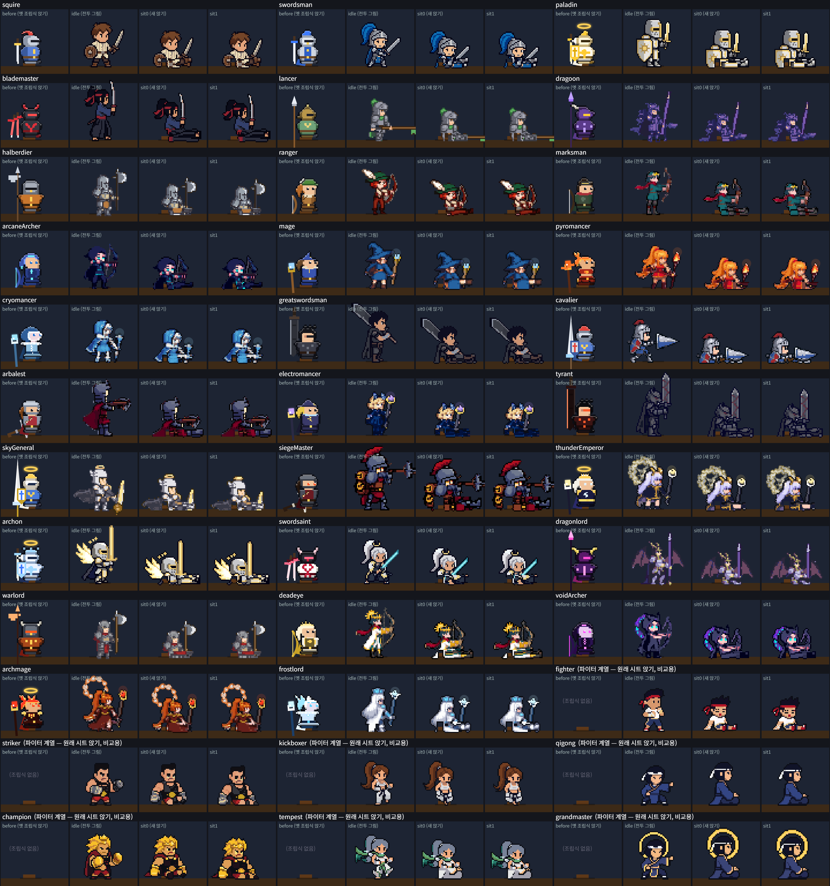
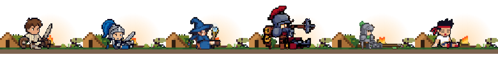
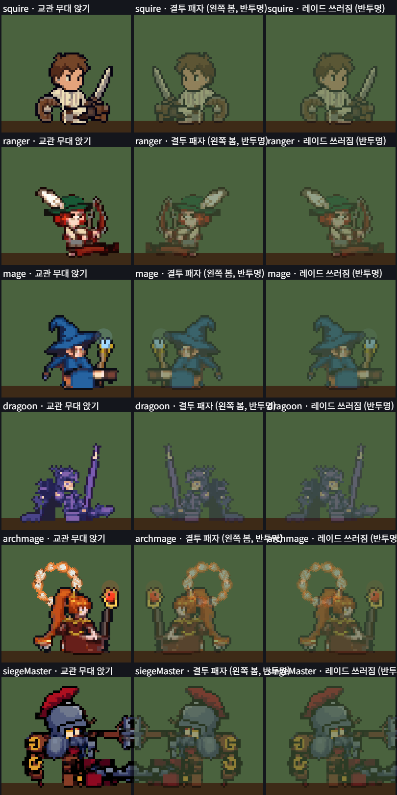

시트 직업 앉기(sit) 줄 — 29장 (시트 직업 36종 중 파이터 계열 7종 외)
2026-10-19 · 사용자 지적 "첫 캐릭 캠프에 앉은 기사랑 싸우는 기사가 왜 다르게 생겼냐" → 시트마다 앉기 줄을 만들어 캠프·교관 무대·결투 패자·레이드 쓰러짐을 모두 시트 그림으로.
0. 요지
- 무엇: 앉기 줄이 없던 시트 29장(견습·검사·창기사·레인저·마법사 계열, 시트를 같이 쓰는 직업 포함 29직업)에
sit줄(2프레임, 2fps 반복)을 붙였다. 파이터 계열 시트와 같은 형식:anims.sit = {row, frames:2, fps:2, loop:true},pts.sit= 대기 pts 를 내린 높이만큼 아래로. - 어떻게 (유료 0): 대기(idle) 프레임 0·1 의 하반신만 편집 — 골반선 위 상체·무기·망토는 그대로 내리고, 다리 픽셀은 90° 눕혀 앞으로 뻗었다(파이터 계열 앉기와 같은 "땅에 앉아 다리를 앞으로" 구도). 색·외곽선·도트는 원래 그림 픽셀 그대로라 전투 그림과 같은 캐릭터로 보인다. ComfyUI·PixelLab 호출 0회 — 무료 스크립트 편집이 검수를 통과해서 유료 계획서가 필요 없었다.
- 결과: 시트 직업 36종 모두
heroSheetNoSit= false → 캠프에서 다시 앉는다(임시 규칙 "시트 대기로 서 있기"는 더 이상 걸리지 않음). - 검수: pixel-critic(합격선 전 항목 3+ · 평균 3.5+) 29/29 합격. 1차 20 합격 → 다리 기둥·골반선 조정·낱점 지우기 → 2·3·4차에서 나머지 9종 합격.
1. 전후 비교 (게임 drawHero 로 그림, 3배)
줄마다 [옛 조립식 앉기(지금까지 캠프 모습) | 대기(전투 그림) | 새 앉기 0 | 새 앉기 1]. 갈색 막대 = 캠프 통나무, 발 기준점 = 땅선. 맨 아래 7종은 원래 앉기 줄이 있던 파이터 계열(비교용).

2. 실제 캠프 화면 (게임 캔버스 잘라냄, 3배)
견습 · 검사 · 마법사 · 공성포수 · 창기사 · 파이터(기존). 통나무 앞 땅에 앉아 모닥불 쪽으로 다리를 뻗는다 — 파이터와 같은 자리·구도.

3. 다른 앉기 화면 (같은 drawHero sit 경로)
교관 무대 앉기 · 결투 패자(왼쪽을 보고 반투명) · 레이드 쓰러짐(반투명). 좌우 반전·반투명·대마도사 등 뒤 불꽃 고리(pts 머리점을 따라 내려옴) 확인. 그리기 예외 0.

4. 검수 점수 (pixel-critic, Sonnet)
항목: intent · read · clean · value · pixel · motion · rules. "차"는 합격한 회차.
| 직업 시트 | 회차 | 의도 | 읽힘 | 깔끔 | 명암 | 도트 | 움직임 | 규칙 | 평균 | 판정 |
|---|
- 1차 수리 사유: greatswordsman·tyrant 망토까지 다리로 잡아 판자 덩어리 → 다리 기둥 좁힘. halberdier·warlord 앞치마를 다리로 잡음 → 골반선 내림. dragoon·dragonlord 누운 것처럼 보임 → 골반선 올려 상체 세우고 다리 짧게. arcaneArcher·voidArcher·arbalest 어두운 덩어리 → 다리 기둥 좁힘. blademaster·swordsaint 땅 위 낱점 → 골반 아래 8도트 이하 외톨이 조각 지움.
- 남은 흠 (전부 합격선 안): 어두운 직업(폭군·공허궁수·석궁병)은 하체가 어두운 덩어리, 할버드·워로드는 하체가 작아 2배에서 약하게 읽힘, 무기를 대기 때처럼 든 채 앉음(의도 — 같은 캐릭터 유지).
- 검수 시트 원본: 1차 검 · 1차 활 · 1차 창 · 1차 마법 · 2차 · 3차 dragoon · 4차 dragonlord


5. 직접 확인하는 법
- 게임 오프라인: index.html?server=http://127.0.0.1:9&guild=0 (닉네임 창이 뜨면 콘솔에서 아래 한 줄 뒤 새로고침).
localStorage.setItem('knight-bar-accounts', JSON.stringify({active:'테스트',list:{'테스트':'local-test-token'}})) - 약 8초 뒤 캠프의 견습이 시트 그림으로 앉아 있다. 콘솔
heroSheetNoSit('squire')=false,Object.keys(CLASSES).filter(heroSheetNoSit)=[]. - 다른 직업으로 보기: 콘솔
S.cls = 'mage'(또는 lancer · siegeMaster · archmage …) — 캠프 기사가 바로 바뀐다. 되돌리기S.cls = 'squire'(저장 안 함). - 그림 다시 만들기:
python dev/sheets-sit/build.py install→node dev/boxer/sheet-meta.js. 미리보기만:python dev/sheets-sit/build.py preview→dev/sheets-sit/out/, 검수 시트python dev/sheets-sit/qa_sheet.py 출력.png 직업,….